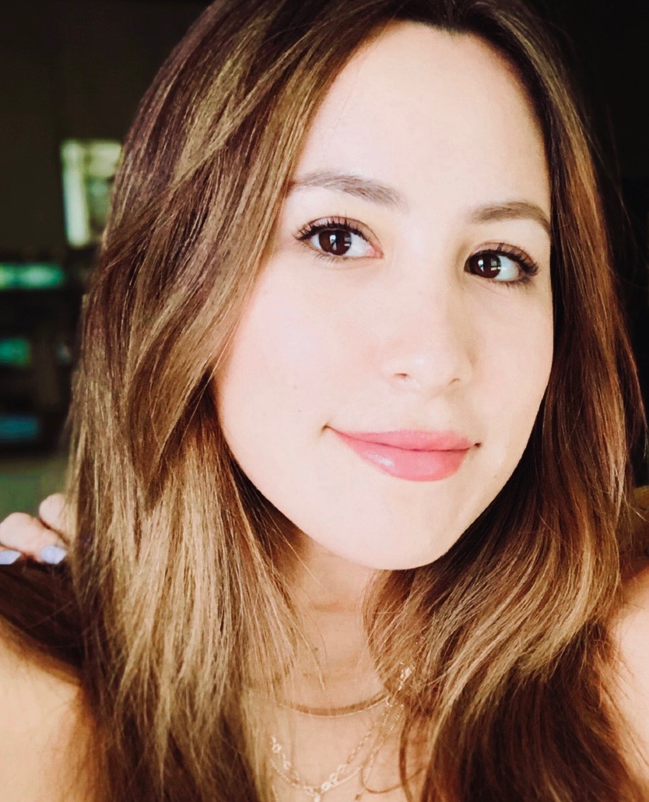

About Me

Welcome to my page! My name is Daniela Chavez. I was born and raised in Lima, Peru so I am fluent in both Spanish and English, as well as dabble in a bit of French. I am now living in Dallas, Texas. I love to travel and recently visited 7 countries in Europe and hope to explore more!
Once I graduated High School, I started school at Loyola University New Orleans where I obtained my degree in Mass Communications; Journalism Sequence with a minor in English. During my time at the university, I was able to further my education by taking a range of classes varying from “Politics & The Media” to “Creative Writing”.
Because of the sequence I chose, I was able to take classes in Digital Communications, Videography, Photography, Law of Mass Communications, Public Relations, Advertising and Social Media Strategies.
After graduating, I began freelancing in web design which then took my interest into the technological aspect of creating websites which is why I enrolled at SMU’s Full-Stack Flex Bootcamp to expand my skill set and knowledge in programming and coding. Because of this I’ve been able to build up a portfolio of more professional work.
If you’d like to work with me, send me an email!